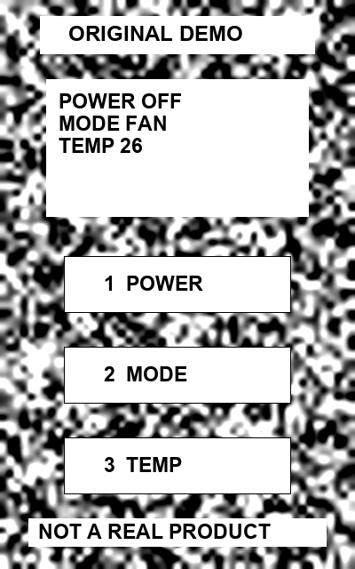

삼성 제품이 아닙니다. Galaxy 카메라로 이 사각형 전체를 비추고, 이 화면의 버튼을 누르세요. 인식은 등록된 원본 그림에서만 동작합니다.
Galaxy 테스트 APK 설치 · 설치·페어링 안내 · 이 페이지는 PC 타깃이며 Android 앱 화면이 아닙니다.

참조 PNG가 없습니다. 프로젝트 루트에서 pipeline\Generate-DemoTarget.ps1을 실행하세요.
실제 가전 제어, 실제 제품 식별, 실제 버튼 조작 검증은 구현하지 않았습니다. 인쇄물로는 추적만 가능하며, 상태 변경과 OCR 실습에는 이 HTML을 쓰세요.